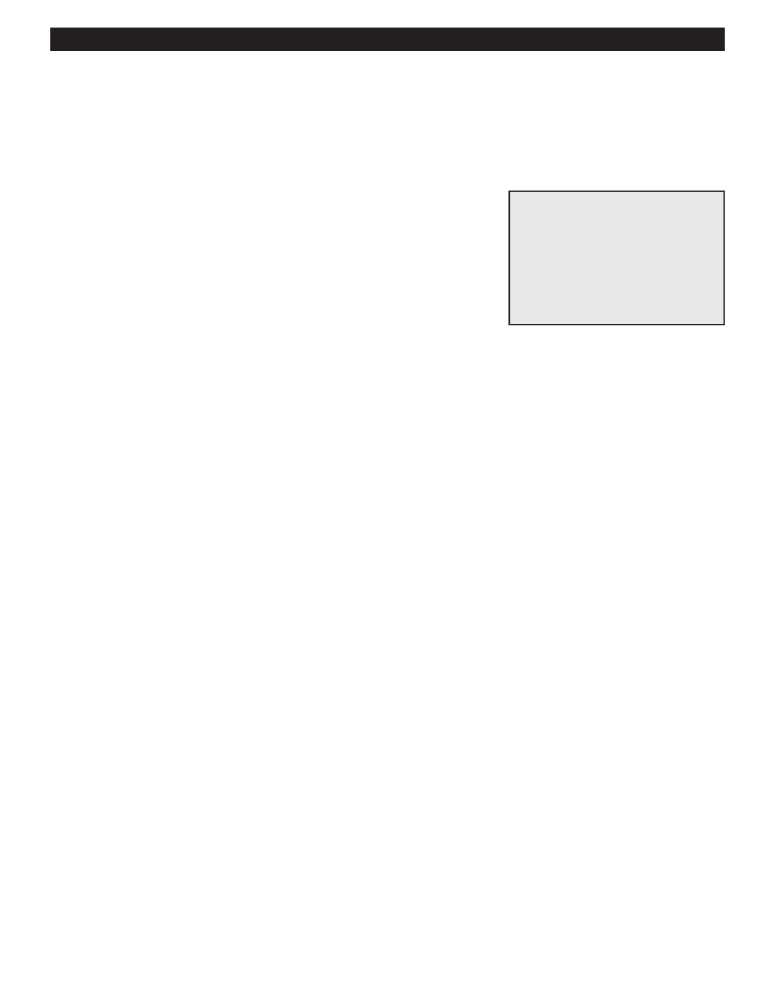

PA RT I C I PA N T R E S O U R C E G U I D E
Re-keying a Door Lock
Re-keying a lock involves changing the pins inside the lock so that the old key doesn’t
work and a new key will work.
Safety
Tools and Materials Needed
Be careful using any sharp or pointed objects.
Screwdriver
Tailpiece tool
Follower tool
Key gauge
Pins
How-to Steps
Note: Tailpiece may be different. Instructions #4, 5, 7, and 9 are for Weiser or Schlage. Kwickset and others will
disassemble differently.
1. Insert the tailpiece tool to remove the tailpiece.
2. Take out lock pin and spring.
3. Insert the pin.
4. Push the plug out of the cylinder using the follower tool. (Retain the top pins inside the cylinder.)
5. Take out the old bottom pins.
6. Use the key gauge to measure the depths of the cuts (notches) on the key to determine the size of pins needed
for the lock.
7. Load the cylinder with the bottom pins of the proper sizes. To do this, insert the key and look for a flat surface across
the top of the cylinder.
8. Verify that the pins are the correct sizes. To do this, insert the key and look for a flat surface across the top of
the cylinder.
9. Use the cylinder to push the follower tool out of the plug.
10. Attach the tailpiece.
11. Use the tailpiece tool to reinsert and lock the tailpiece in place to hold the lock together. Do not overtighten.
Notes:
23